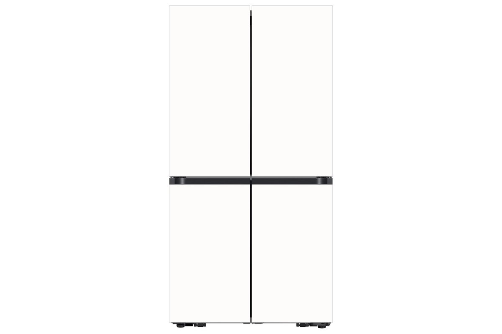
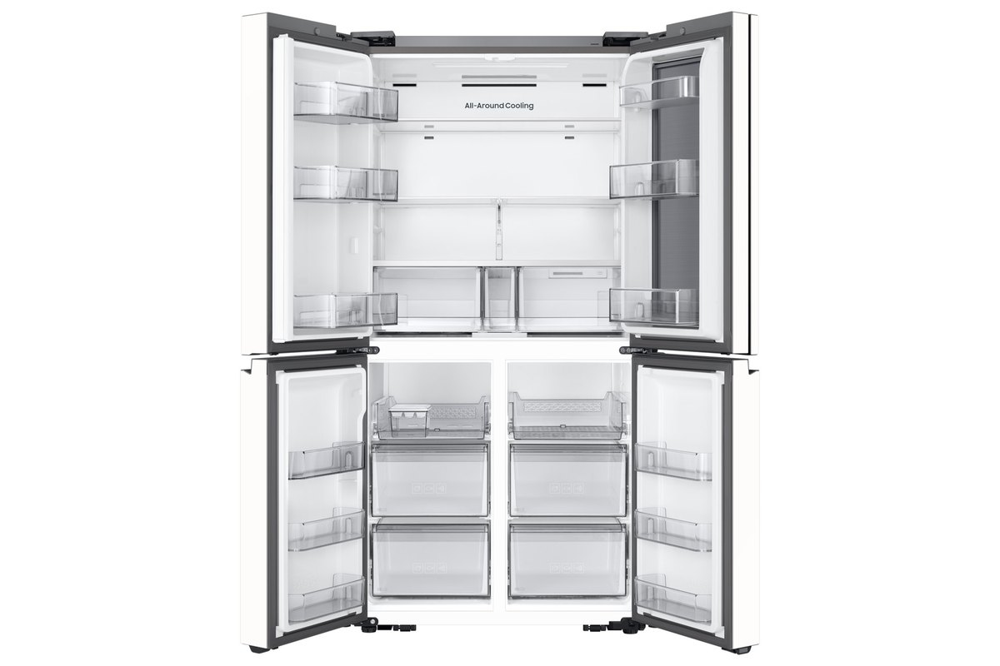
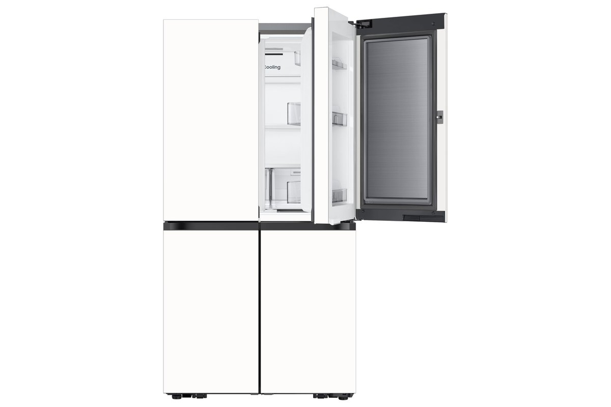
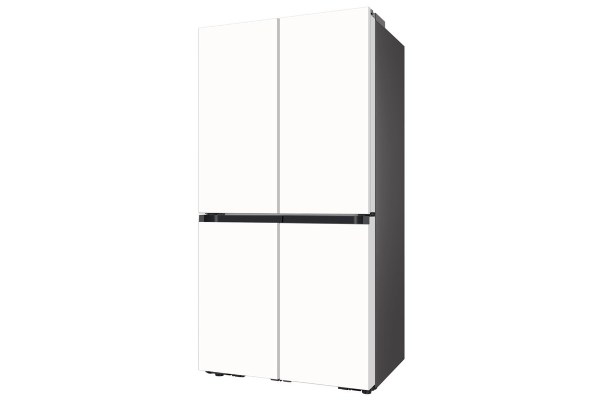
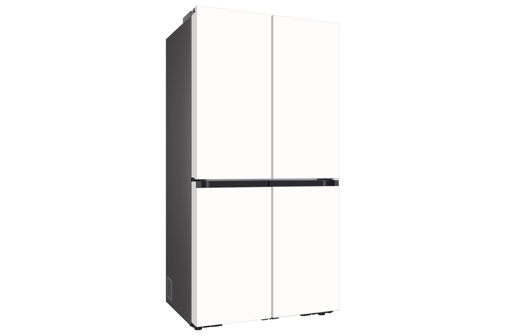

Samsung Bespoke AI 4-Door Fridge RM70F90M1ZD Review: Overview
This Samsung Bespoke AI 4-door fridge review covers the RM70F90M1ZD, a 902-litre Korean family fridge in Essential White. It has a Food Showcase door for daily items, deeper shelves, Metal Cooling doors and a Korean energy grade 1 rating. It is aimed at households that shop in bulk and open the fridge many times a day.
The Samsung partner store on Naver Shopping Connect that we checked listed it at 2,299,000 KRW; Lotte Hi-Mart listed it at 3,400,000 KRW. On Samsung Korea's store it had a 4.8 / 5 rating from 478 owner reviews when we checked. We checked the specs against Samsung Korea's product and support pages, Danawa, Costco Korea and Lotte Hi-Mart. We did not test it in our own kitchen.
"A very large, efficient family fridge built around easy daily access. You give up an automatic ice maker and a water dispenser."

Storage: 902 Litres and the Food Showcase
Total capacity is 902 L: 536 L in the fridge and 366 L in the two bottom freezer drawers. Samsung says the upper and middle fridge shelves are 60 mm deeper, with about 13.8% more shelf area than its older RF85C90N1AP. The inside back wall is also flat, so there are no bulges in the way. There is a long vegetable compartment, a folding shelf and ceiling LED lighting.
The Food Showcase on the right door is the main reason to choose this model. Drinks, sauces, kimchi side dishes and milk go in the outer showcase, and you reach them without letting cold air out of the whole fridge. Longer-stored food goes in the inner case.


Cooling and AI Features
Samsung uses an AI inverter compressor with multi-cooling and Metal Cooling doors, which are meant to keep the temperature steadier when you open the fridge. Samsung says its fine temperature control keeps the fridge within ±0.5 °C, based on its own tests of the RM90/RM80/RM70 range.
With the SmartThings app you get AI Energy Mode and AI Fine Temperature Mode. These need a Wi-Fi connection and the app, and some features vary by phone and region. The display is hidden in the door and only lights up when needed.
Design, Size and Installation
The doors are Samsung's Essential Metal in white, with a soft matte finish, and the colour wraps around the sides. Unlike some Bespoke models, the panels cannot be swapped for other colours later. The handles are horizontal.
It is 912 × 1,830 × 908 mm (922 mm deep with the rear handle) and weighs 154 kg. It is a freestanding fridge; Hi-Mart also lists it for semi-built-in installation. Samsung Korea has an installation guide; check it for the side and rear gaps you need. The ice is from a manual tray, so you do not need a water line.


Key Specs
| Spec | Samsung Bespoke AI 4-Door RM70F90M1ZD |
|---|---|
| Type | Freestanding 4-door fridge (French-door fridge, two freezer drawers) |
| Capacity | 902 L total: fridge 536 L, freezer 366 L |
| Size (W × H × D) | 912 × 1,830 × 908 mm (922 mm with rear handle) |
| Weight | 154 kg |
| Energy | Korean grade 1; 44.4 kWh per month |
| Power | 220 V / 60 Hz |
| Compressor / cooling | AI inverter compressor, multi-cooling, Metal Cooling doors |
| Refrigerant | R600a |
| Food Showcase | Yes (right door) |
| Ice | Manual ice tray, cube ice; no water dispenser |
| Display | Hidden simple display |
| Smart features | SmartThings, AI Energy Mode, AI Fine Temperature Mode |
| Door finish | Essential Metal, Essential White; panels not replaceable |
| Made in / launch | Korea; July 2025 |
| Korean price | 2,299,000 KRW at the Samsung partner Naver store at the time of writing; 3,400,000 KRW at Lotte Hi-Mart |
Specs come from Samsung Korea's RM70F90M1ZD product and support pages, Danawa, Costco Korea and Lotte Hi-Mart; prices were checked in November 2026. Temperature and shelf figures are Samsung's own claims, and we did not test the fridge ourselves.
How It Compares
| Bespoke AI 4-Door RM70F90M1ZD (this) | Bespoke AI 4-Door RM70F90M1GD | Bespoke Kitchen Fit kimchi fridge RQ33DB74C1AP | |
|---|---|---|---|
| Colour | Essential White | Essential Beige | Cotta White |
| Capacity | 902 L | Same as RM70F90M1ZD | 313 L, 3 doors |
| Food Showcase | Yes | Yes | No (kimchi fridge) |
| Energy grade | 1 | 1 | 1 |
| Best for | Main family fridge in a white kitchen | Main family fridge in a warm-toned kitchen | A second fridge for kimchi and long storage |
Pros & Cons
| Pros | Cons |
|---|---|
| 902 L with deeper shelves and a flat back wall | 154 kg and 912 mm wide; needs a large space |
| Food Showcase for drinks and daily side dishes | No automatic ice maker or water dispenser |
| Korean energy grade 1 (44.4 kWh per month) | Door panels cannot be swapped later |
| Steady cooling with Metal Cooling doors | AI features need SmartThings and Wi-Fi |
| 4.8 / 5 from 478 reviews on Samsung Korea | Korean 220 V model; not for U.S. use |
Who It Suits (and Who Should Skip It)
- Yes: Families of four or more who do a big weekly shop.
- Yes: Homes that open the fridge often for drinks and side dishes; the Food Showcase saves cold air.
- Yes: White or light kitchens that want a clean, matte metal look.
- No: Anyone who wants an automatic ice maker or a water dispenser.
- No: Small kitchens or narrow doorways; measure first.
- No: Buyers outside Korea; choose a model sold for your country's voltage.
Samsung Bespoke AI Fridge RM70F90M1ZD FAQ
What is the Samsung RM70F90M1ZD?
It is Samsung's Korean-market Bespoke AI 4-door refrigerator, 902 L, in Essential White, with a Food Showcase door on the right. It launched in July 2025, has a Korean energy efficiency grade 1 and is made in Korea. The beige version of the same fridge is RM70F90M1GD.
How big is the RM70F90M1ZD and will it fit my kitchen?
Samsung lists it at 912 mm wide, 1,830 mm tall and 908 mm deep without the rear handle (922 mm with it), and 154 kg. It is a freestanding fridge, so allow extra space at the sides and back for air, and check that the doors can swing open fully next to walls or cabinets. Measure doorways and the lift before delivery.
What is the Food Showcase?
The right-hand fridge door is split into an outer showcase and an inner case. You open the outer door to grab drinks, sauces, milk and other daily items without opening the whole fridge, and keep longer-stored food in the inner case. Samsung says it fits everything from small sauce bottles to juice and milk cartons.
Does it have an ice maker or water dispenser?
No automatic ice maker and no water dispenser. It has a manual ice tray for cube ice, so it does not need a water line. If you want an automatic ice maker, look at other Bespoke models.
Can I use the Korean RM70F90M1ZD in the U.S.?
We don't recommend it. It is a 220 V / 60 Hz Korean model with a Korean warranty and service network, and it is too heavy and large to ship cheaply. Samsung sells Bespoke 4-door French-door fridges in the U.S. under different model numbers, so the Amazon button on this page searches for those.
Samsung Bespoke 4-Door French-Door Refrigerators
The Korean RM70F90M1ZD is sold through Korean retailers. In the U.S., Samsung sells Bespoke 4-door fridges under different model numbers; compare current listings on Amazon.